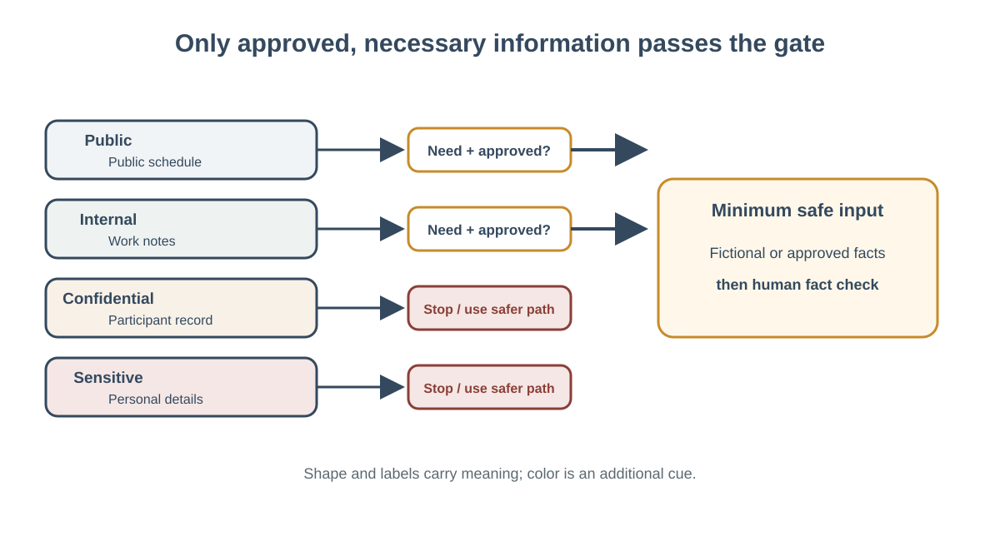

← Week 5: Privacy, Fairness, Agents, and Autonomy
Privacy, Safer Inputs, and Fair Use
Learning objectives: Choose what information is appropriate to share, account for privacy, fairness, accessibility, and policy, and retain human accountability.; Apply data-minimization and approval checks before sharing information with an AI service.
Content
Privacy, Safer Inputs, and Fair Use
Objectives: protect-sensitive-information.

Figure: The information gate blocks details that are unnecessary or not approved for use.
Privacy begins before the tool
When people discuss AI privacy, they often focus on the service: where data goes, how long it is retained, or whether it may be used to improve a model. Those are important questions, but they are not the first decision. Before using any service, decide whether the task needs the information at all. The safest sensitive detail is often the one that never enters the workflow.
Consider a fictional example. Maya works at a community arts center and needs a template reminding participants to bring a signed permission form. She has a spreadsheet with names, email addresses, attendance notes, and emergency contacts. The task is to write a general reminder. A writing assistant does not need that spreadsheet. Maya can describe the audience in broad terms, ask for a friendly message, and use a placeholder where a deadline belongs. An authorized staff member can later send the final message through the approved system.
This example separates the goal from the data. The goal is a clear reminder. The minimum input is the purpose, audience, tone, and verified deadline. The output is a reusable template. Evidence for the deadline comes from the center’s current schedule. The human decision is whether the message is accurate and appropriate before it is sent. Keeping these parts separate helps prevent a generated draft from being mistaken for a verified communication.
Classify, minimize, and check
Information can be public, fictional, internal, personal, confidential, or regulated. These are useful everyday labels, not a replacement for your organization’s policy. Personal details identify or describe people. Confidential details are restricted to protect a person or organization. Regulated information has specific handling requirements. A single record can fit more than one category. If you are unsure, treat the information cautiously and ask an authorized person.
Use this four-step check:
- Name the task. What output is needed and who will use it?
- List the minimum input. Which facts change the output? Which are unnecessary?
- Check the boundary. Is this service approved for this information and purpose? What does local policy require?
- Choose the safer method. Generalize, use fictional data, work in an approved system, ask for guidance, or complete the task without AI.
Data minimization means providing only what the task requires. It makes the request more focused and reduces unnecessary exposure. Removing names is not always enough. A rare job title, location, date, and unusual event can identify someone when combined. Replace the combination with broader details. “A staff member at a small clinic” may be sufficient for a practice scenario; a named clinic and exact incident date may not be.
Do not treat placeholders as a magic shield. A realistic “example” copied from a live record may still reveal information. Use invented names and details that do not correspond to a real person. If you must transform real data for a legitimate task, follow an approved procedure. Do not paste a record into a general service just to ask it to remove identifying details; that act already shares the record.
Safer alternatives preserve the useful work
Often, you can keep the value of AI while changing the input. A request to “summarize this customer’s complaint” may become “create a neutral summary template with sections for issue, requested resolution, and next step.” A request to “rank these applicants” may become “help me write a consistent checklist based only on the published role requirements.” The second form does not ask a model to judge identifiable people. A qualified human applies the checklist using authorized materials.
For a message, ask for a blank draft with placeholders. For a process, ask for a checklist or decision tree using fictional cases. For a spreadsheet, ask for a formula pattern using made-up values. For analysis, see whether aggregate or de-identified data is allowed and whether it actually removes risk. When in doubt, do not improvise a privacy transformation; consult the person or policy responsible for the data.
Fairness is also an input question
Privacy and fairness are related but distinct. A workflow can protect names and still be unfair if it uses irrelevant criteria, inconsistent data, or assumptions about a group. Imagine a training coordinator uses a generated summary to identify employees who “seem motivated.” If the source notes are uneven, subjective, or influenced by who received more coaching, the summary can repeat those patterns in polished language. Fluency does not make an input fair.
For tasks involving people, ask whether the criteria are connected to the stated purpose, whether the same evidence is available for everyone, and whether the decision belongs to a qualified human. Avoid asking a model to infer honesty, commitment, health, personality, or potential from unrelated details. If the work can affect someone’s opportunity, access, or treatment, require an accountable reviewer and use approved criteria. A generated description should not quietly become a decision.
A decision record can be small
You do not need a lengthy privacy memo for every low-risk draft. A short record can show sound judgment: “Purpose: reusable reminder. Input: fictional audience description and verified date only. System: approved drafting tool. Human check: confirm deadline and policy before sending. No participant records entered.” This makes the choice reviewable and helps a colleague repeat the safe pattern.
Pause and seek guidance when the data is personal, confidential, or regulated; the service or use is not clearly approved; the output could affect a person; or the task depends on information that cannot safely be generalized. A safe decision may be to use another method. AI is optional. The goal is good work under the right information boundary.
Text equivalent for the image
[Image placeholder: “The input safety funnel.” Caption: A wide set of possible workplace details narrows through three checks—task need, sensitivity and policy, and safer alternative—until only the minimum appropriate fictional or approved information reaches the AI step. A separate human review checks facts before delivery.]